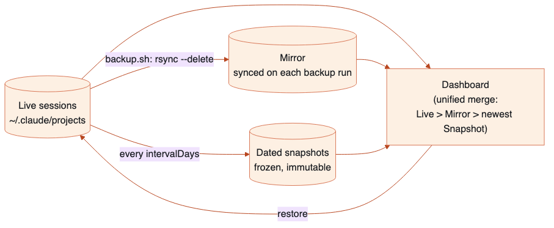
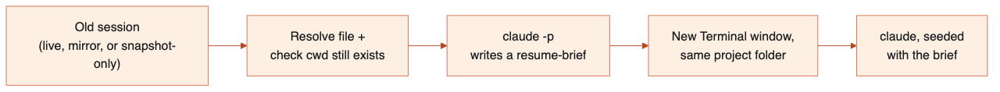

Problem. Claude Code deletes session transcripts under
~/.claude/projects/ once they're older than
cleanupPeriodDays (default 30), based on file mtime, checked on
every startup. Real GitHub issues report this cleanup misbehaving — deleting
sessions newer than configured, leaving orphaned sidebar entries. Raising the
retention number is not a real fix: it only governs Claude Code's own sweep,
not a human or script deleting a project folder, and it doesn't compress
anything, so the live directory just grows forever.
Approach. A three-tier data model — live sessions (Claude Code's own directory, unmodified), a mirror (a live-updating rsync copy), and dated snapshots (immutable, compressed, point-in-time archives) — plus a small local dashboard that reads all three and presents them as one thing: every session you have a copy of, searchable, restorable, renameable, deletable, and — the newest feature — resumable into a fresh session via an AI-written summary when the original's context window is already full.

Build philosophy. Zero npm dependencies, deliberately — both the bash scripts and the Node dashboard server run with nothing to install. The frontend is vanilla JS/CSS, no framework, no build step. Every transcript parser fails soft (skip the line/file, mark the field "unknown") because the JSONL format is internal to Claude Code and explicitly documented as subject to change between releases. Almost every non-obvious design choice below was arrived at by actually running the real command against real data and real system behavior, not by reasoning from documentation alone — several genuine bugs (§7) were only found this way, and would not have been caught by code review.
What "flexibility" means here today (expanded in §8): this is a personal/small-team tool tuned to one person's real Mac, not a general-purpose backup product. It is genuinely configurable along several axes (retention counts, snapshot cadence, context-window size, model choice, noise filtering, backup location, Claude config location) via config.json and environment variables — but it is macOS-only for the interactive features, single-machine (backups live on the same disk), single-user (no auth, binds to localhost), and tied to Claude Code's current JSONL transcript shape (mitigated, not eliminated, by fail-soft parsing throughout).
| Source | Location | Written by | Mutability |
|---|---|---|---|
| Live | ~/.claude/projects/<encoded-dir>/<id>.jsonl | Claude Code itself | Mutated continuously while a session is open; deleted by Claude Code's own cleanup |
| Mirror | $BACKUP_ROOT/mirror/… | backup.sh (rsync -a --delete) |
Re-synced on every backup run — deletions from live do propagate here |
| Snapshot | $BACKUP_ROOT/snapshots/claude-sessions-<ts>.tar.gz | backup.sh, only when intervalDays has elapsed |
Immutable once written — only ever pruned whole, past keepCount, never edited |
--delete to stay in sync with live, so a deletion in live
propagates to the mirror on the very next backup run. Its actual job is
narrower: close the gap between "a session is created" and "it lands in an
immutable snapshot," which matters specifically for the documented failure
mode where Claude Code's cleanup deletes something before its intervalDays
window is up. The snapshot is the only piece that is truly tamper-proof
against Claude Code's own behavior.
lib/unified-sessions.js produces one row per session id, never duplicated across sources, with badges for every place it currently exists. Confirmed with the user before building: merge priority is Live > Mirror > newest snapshot that has it — live is the freshest possible copy of the truth (could have grown since the last backup), mirror can lag by up to one backup cycle, and a snapshot is a frozen copy that could be much older, so among several qualifying snapshots the newest is the best guess at the session's last-known state.
for each session id across live ∪ mirror ∪ any-snapshot:
if in live: use live's title/cwd/size/usage
else if in mirror: use mirror's
else: use the newest snapshot containing it
(extracted on demand — see 2.3)
The naive approach — fully extract every session from every snapshot to
know what's inside — does not scale with keepCount. The actual
design:
listSessionsInDir(),
a full per-file analysis (see §3.1) — already fast, unchanged by anything
snapshot-related.tar -tzf — the archive's member listing, which
reads the gzip stream but writes nothing to disk and decompresses no file
contents. This is backups.js's
listSnapshotSessionIds().Measured against the real machine this was built on (68 live sessions, 1 snapshot, ~176MB source directory): full merge in ~2.4 seconds. The dominant cost is the live/mirror per-file reads, not the snapshot listing.
Originally three separate reads per file (cwd, usage, title each parsed
the whole transcript independently) — replaced with one
analyzeSessionFile() that reads once and extracts everything in
a single line-by-line pass. On a real 26MB transcript this is the difference
between one read and three.
Confirmed against real Claude Code data (not assumed) that sessions carry more identity information than a bare UUID:
{"customTitle":"TWP-5695"}) — treated as
authoritative, since it's the cheap dedicated file a UI would read.{"type":"custom-title","customTitle":"…"} entry
in the transcript itself — the same data, logged differently; used when the
side-car doesn't exist.{"type":"ai-title","aiTitle":"…"} entry —
auto-generated by Claude Code.The dashboard's Rename action writes only the side-car file (option 1) — reusing the exact mechanism Claude Code itself uses rather than inventing a second one.
message.usage.input_tokens is frequently a streaming placeholder
(often exactly 1), not the final value. The original approach
(PRD-inherited) scanned a file from the end and took the first usage total
that cleared a 50-token noise threshold. The single-pass rewrite achieves the
identical result more cheaply: a forward pass that keeps overwriting
"last qualifying total" whenever a line clears the threshold ends up holding
the value from the highest-index qualifying line — provably the same answer
as the backward scan, without a second pass or reversing anything.
Default window: 1,000,000 tokens, matching current Sonnet-5/Opus-5-class
models (verified via the model reference used elsewhere in this toolchain) —
changed from an initial 200,000 default that was flagging most real sessions
as falsely "100% full." Configurable per-install via
contextWindowTokens in config.json.
Session ids and snapshot filenames arrive from HTTP request bodies and get
joined into filesystem paths for essentially every operation (open,
continue, rename, restore, delete). isSafeSessionId()
(/^[A-Za-z0-9_-]+$/) is enforced at findSessionFileIn() —
the one place a session id first becomes part of a path — so every caller is
protected uniformly rather than each route remembering to validate. Snapshot
filenames are equally constrained by SNAPSHOT_NAME_RE in
lib/backups.js, matching the exact format
backup.sh generates.
Covered in §2.2–2.3. No state of its own — pure function over the outputs of sessions.js and backups.js.
Snapshot listing, per-snapshot content browsing (extracts just the matched
.jsonl members via an exact file list, never a glob — see §7 for
why), single-session extraction for the Continue/restore flows
(extractSessionFromSnapshot, which also pulls along a
session's subagents//tool-results/
subdirectory if present), and mirror/snapshot deletion.
The only module that writes to a file this project does not own — ~/.claude/settings.json, which also holds hooks, model choice, and other Claude Code configuration unrelated to this tool. Every write:
cleanupPeriodDays key — never assumes the file's shape beyond
that one key.launchctl print gui/<uid>/<label> exposes
state, runs, last exit code, and
run interval — and nothing resembling a scheduled next-fire
time for a StartInterval job. "Next run" in the dashboard is
therefore computed (last completed run, parsed from
backup.log, plus the interval) and explicitly
labeled an estimate, not a promise.
This also required fixing backup.sh's log
timestamps: bash's default date output
(Thu Aug 27 22:55:12 IST 2026) is Invalid Date to
JavaScript's Date constructor — IST is ambiguous
across timezones and V8 rejects it. Switched to ISO 8601
(date -u +"%Y-%m-%dT%H:%M:%SZ"), confirmed parseable, confirmed
the parser correctly skips old-format lines and finds the newest
ISO-format one when both exist in the same log.
Generates the resume-brief by shelling out to the local claude
CLI in headless mode (claude -p … --output-format json) rather
than calling the Anthropic API directly. This was a deliberate pivot: the
original design called the raw Messages API, which needs
ANTHROPIC_API_KEY — not available on an enterprise/subscription
plan with no raw API key. The CLI authenticates however the user's normal
interactive sessions already do (OAuth/keychain/enterprise SSO), confirmed
working with no key set in the environment.
Per-call flags, each chosen for a specific reason: --no-session-persistence
(a summarize call shouldn't itself create a new session transcript for this
tool to have to manage), --tools "" (pure text in/out, no
file/bash access, so no permission prompts), --effort low (a
resume-brief is a rote task, not one that benefits from deep reasoning).
lib/shell.js exports two escaping functions for two unrelated grammars:
shQuote() — POSIX single-quote escaping (wrap in
'…', turn embedded ' into '\'') for
the shell command that ends up running inside Terminal.asQuote() — AppleScript string-literal escaping (escape
\ and ") for the do script "…"
payload passed to osascript.These are independent because they protect against different parsers at
different stages: shQuote's output must survive bash/zsh;
asQuote's output must survive AppleScript's own compiler before
that string is ever handed to a shell at all. execFile() is used
with an argument array (never shell: true, never string
concatenation into a shell command), so there is no third, Node-level
interpretation layer to reason about — confirmed by adversarial round-trip
tests (embedded ', $, backticks, spaces, empty
string, mixed) against both a real spawned bash and real
osascript.
runInTerminal() — the shared primitiveBoth "Open" (claude --resume <id>) and "Continue"
(claude "$(cat <brief file>)") reduce to the same
operation — build a shell command, wrap it for Terminal, run it — and share
one implementation. macOS Automation-permission denials (-1743)
are caught and surfaced as an actionable message rather than a raw
osascript error.

A zero-dependency Node http server — no Express, no router
library. Routes are a flat sequence of if (pathname === … &&
req.method === …) checks inside one handleApi()
function. Every mutating route validates its inputs (session id, snapshot
filename) before they reach a filesystem path (§3.1). Long-running
operations (backup.sh, restore.sh, the launchd
scripts) run via execFile('bash', [scriptPath, …args]), never a
shell string — same reasoning as §4.1.
| Route | Method | Purpose |
|---|---|---|
| /api/status | GET | Combined status: paths, cleanup period, mirror/snapshot presence, automation state, config |
| /api/backups/unified-sessions | GET | The merged sessions table (§2.2) |
| /api/backups/snapshots | GET | List dated archives |
| /api/backups/snapshot-sessions | GET | Contents of one archive |
| /api/backup | POST | Run backup.sh |
| /api/restore, /api/restore-session | POST | Whole-source or single-session restore |
| /api/sessions/delete, /api/backups/delete-mirror-session, /api/backups/delete-snapshot | POST | Deletion, scoped per source |
| /api/sessions/rename | POST | Writes the custom-title.json side-car |
| /api/sessions/continue | POST | Resolve → brief → new Terminal session (§3.6, §4) |
| /api/open-session | POST | claude --resume in the session's real cwd |
| /api/cleanup-period | POST | Safe write to Claude Code's own settings.json (§3.4) |
| /api/config | POST | This tool's own config.json |
| /api/automation/install, /api/automation/stop | POST | launchd load/unload |
Vanilla JS/CSS, no framework, no build step, two tab scripts
(backups.js, automation.js)
plus a shared app.js. All rendering is direct DOM
manipulation and template-string innerHTML — user-controlled
text (titles, paths) is escaped via a shared escapeHtml() before
interpolation, everywhere, since it ultimately originates from HTTP
responses derived from transcript content.
Each list (sessions, mirror, snapshots) fetches its full dataset once and
paginates/filters entirely client-side. At this data scale (tens to low
hundreds of rows) this is simpler than server-side limit/offset
and avoids adding query-param handling to every list endpoint; it would need
revisiting only if this ever needed to scale to thousands of rows, which is
not the current problem.
Added after it was pointed out that "Continue" (a real multi-second
claude -p call, observed at 15-20+ seconds) gave zero visual
feedback while running — indistinguishable from a broken button. A shared
set of primitives (spinner glyph, table-level loading rows, two button
wrappers for icon-only vs. text buttons) covers every async action
uniformly, verified live that the spinner appears immediately and the
button stays disabled through the entire real call.
Replaced the native title attribute after it was reported as
effectively invisible in practice — browsers delay it roughly half a second
to a second and render it inconsistently across platforms. A CSS
[data-tooltip]::after bubble, set via a shared
window.CSK.tooltip() helper, appears in ~0.1s and looks
identical everywhere; confirmed via automated hover that it's fully opaque
within 200ms.
POST /api/sessions/continue {sessionId}.extractSessionFromSnapshot() to pull just that session's
.jsonl (plus any subagents//tool-results/)
into a temp directory.cwd (read from the
transcript, not the encoded directory name) still exists on disk — fails
with a clear 422 if not, rather than opening a Terminal that silently does
nothing (this matters in practice: an automated PR-review bot's sessions
commonly have a /tmp/pr-review-* cwd that's long
gone).claude -p to get the brief.runInTerminal() opens
a new Terminal window running claude "$(cat <file>)"
(§4.2, §7 for why not a direct multi-line argument) in the resolved cwd.finally block regardless of success/failure.POST /api/restore-session {sessionId, source}
where source is either "mirror" or a snapshot
filename (validated against SNAPSHOT_NAME_RE).restore_from_dir() path
the other restore modes use.rsync -a --ignore-existing --itemize-changes copies only
what's missing at the target, never overwriting an existing file.>f+++++++ lines) gets its mtime reset to now —
but only when the restore target is the live
~/.claude/projects — otherwise Claude
Code's cleanup would delete a restored, already-old session again on its
very next startup (§7).Every entry below was found by actually executing the code against real data or a real system, not by inspection — several would not have been caught by review alone. Listed because the failure modes are instructive for anyone extending this codebase.
set -o pipefail plus grep returning exit 1 on "no
matches" meant that "nothing needed restoring" (a normal, frequent outcome —
not an edge case) aborted the entire script under set -e. Fixed
by neutralizing just that one pipeline stage's exit code
({ grep '^>f' || true; }) without touching what it prints.
tar -T - (read the file list from stdin) is a GNU tar
convention; macOS's bsdtar errors Failed to open '-'. Fixed by
writing the member list to a real temp file and passing that path instead.
rsync -a preserves the source file's original mtime. A restored
session kept its old, already-cleanup-eligible mtime and would have been
deleted again by Claude Code's own cleanup on the very next startup —
confirmed by an actual touch+restore+stat test, not assumed. Fixed by
resetting mtime on every file actually transferred, scoped to only the
live-directory restore case.
.usage-bar-fill was a bare <span> (inline by
default); inline elements ignore explicit width/height
in CSS. The percentage math was correct the whole time — nothing visibly
rendered it. Fixed with display: block.
claude '<brief>'
is not a correctness bug — shQuote/asQuote round-trip
it byte-for-byte, and Claude Code receives and responds to the full, correct
text (confirmed). But do script "types" the whole command into
Terminal, and a single-quoted argument spanning many physical lines makes the
shell show its normal multi-line quote-continuation prompt for every line
while it's typed — visually indistinguishable from a stuck shell. Fixed by
writing the brief to a temp file and typing only claude
"$(cat <file>)" — one short line, the multi-line content
substituted in invisibly by the shell itself.
<script> tags, which share
one top-level lexical scope in the browser — a bare top-level
const icon = … in both files threw
"Identifier 'icon' has already been declared," silently breaking the entire
Automation tab. Fixed by wrapping each file's body in an IIFE.
.btn { display: inline-flex } and the browser's default
[hidden] { display: none } have equal CSS specificity; the
later rule in the cascade (the page's own stylesheet) won, so toggling
.hidden on a button with class .btn had no visual
effect — "Install / start" and "Stop" showed simultaneously, reported
directly as confusing (looked like the tool didn't know its own state).
Fixed with [hidden] { display: none !important; }, a global
rule that guarantees the semantic attribute always wins.
icon + raw text (no wrapping element)
inside a display: flex container produced an anonymous
text-node flex item that didn't wrap the way a normal block does —
overlapping text instead. Fixed by wrapping the text in a
<span> with flex: 1; min-width: 0.
| Key | Default | Governs |
|---|---|---|
keepCount | 6 | How many dated snapshots survive pruning |
intervalDays | 15 | Minimum age of the last snapshot before another is cut |
contextWindowTokens | 1,000,000 | Denominator for the context-usage % estimate |
summarizeModel | sonnet | claude CLI model alias/name used for Continue's resume-brief |
titleExcludePatterns | ["^Review \d+ changed file"] | Regexes hiding matching sessions from the default view (search overrides) |
| Variable | Effect |
|---|---|
CLAUDE_CONFIG_DIR | Overrides where "live" (~/.claude) is read from — used throughout the test suite to point at fixture directories without touching real data, and usable to run this tool against a different Claude Code install |
CLAUDE_SESSION_KEEPER_BACKUP_ROOT | Overrides where the mirror/snapshots live (default ~/claude-session-keeper-backups) |
PORT | Dashboard HTTP port (default 4317) |
These two env vars are what make the module boundaries genuinely testable
in isolation: every test that needs a "live" or "backup" directory points
these at a temp directory rather than mocking the filesystem, so the tests
exercise the real code paths (real rsync, real tar,
real file I/O) against disposable data.
StartInterval
is baked into the plist template, not read from
config.json. Changing it means editing the
template and reinstalling.listSessionsInDir(rootDir, opts) is root-agnostic — the
live and mirror views are the exact same function called against two
different directories. A third source with the same on-disk layout would
plug in for free.lib/backups.js and lib/sessions.js have no
dependency on the dashboard — both are usable as plain Node libraries from
a different frontend or a CLI.execFile with an
argument array, never a constructed shell string — extending the set of
automated actions (a new osascript-driven action, a new backup script) can
follow the exact same safe pattern already established in
shell.js/server.js.80 unit tests, node --test, zero test dependencies. Two
complementary strategies:
bash and real osascript;
the restore mtime fix was verified with real touch +
rsync against scratch directories; the launchd "not installed"
path was verified by actually unloading and reloading the real job; the
Continue feature's Terminal behavior was verified by reading the actual
Terminal window's contents after a real run, not just checking the HTTP
response.This distinction mattered in practice: several of the bugs in §7 (the mtime issue, the bsdtar flag, the terminal-typing appearance, the CSS specificity issues) are exactly the class of bug that a fixture-only test suite would not surface, because the fixture would encode the same assumption the code was making.